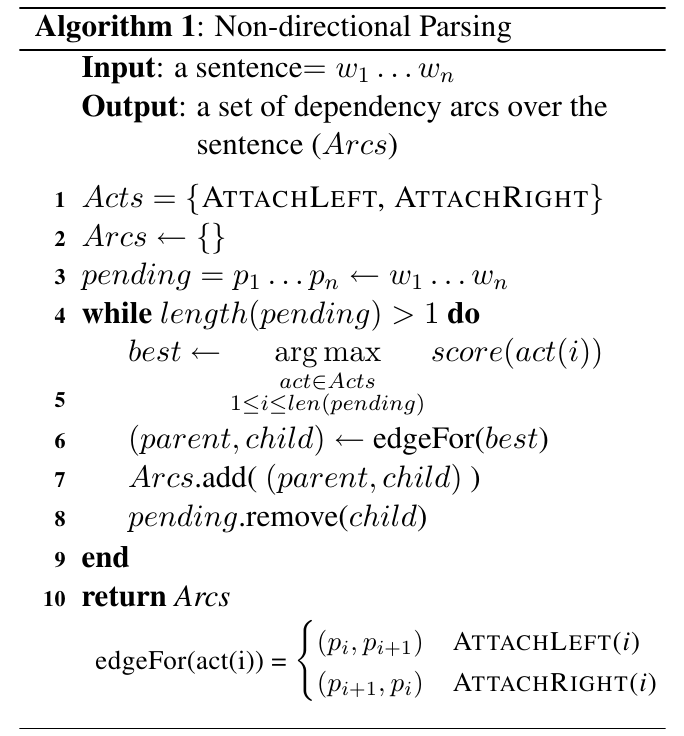

Tutorial: An Efficient Algorithm for Easy-First Non-Directional Dependency Parsing – writing the code
Table of Contents
1 How to contribute to this document
This document exists in XHTML, latex, text and org-mode versions. Editing the first three is straightforward, but will force all future contributors (if such will exist) to use the same version/format, since this will break the compatibility of the different formats. Do this only if you're sure the future contributors will be OK with it, or you know they will not exist (for example: you are now completing the document). If you have done so, be sure to either label the other versions as outdated/irrelevant, or simply delete them.
Another option is to edit the text file 'tutorial.org' in you favorite text editor. If you ignore lines 5-15, it's pretty much straightforward to understand the usage: The number of left-aligned '*' before a line determine it's `depth' in the document (more is deeper), and elements are automatically nested in the immediate higher level item.
if you want \(\TeX{}\), or \(\LaTeX\),
include its code inside adjacent dollar signs:
$[latex code here]$.
Just look at 'tutorial.org' for examples.
To use the other many wonderful, yet simple to use, features of org-mode, like auto-numbering of items, footnotes and others, it's recommended you read the orgmode website and the (relevant) docs, or the tutorial that comes with it as part of Emacs, or these tutorials.
- Exporting
- To export to HTML, tex and text once you're done, open
Emacs (you know where to get it), press Ctrl-x Ctrl-f
and type the path to the file. Then, press Ctrl-c
Ctrl-e h (for HTML), Ctrl-c Ctrl-e p (for pdf), Ctrl-c
Ctrl-e l (for latex), Ctrl-c Ctrl-e u (for unicode
text, a for ascii). Many other export format exist -
you'll find it in the ``Emacs-style popup''
window.
MAKE SURE YOU EXPORT IN ALL FORMATS ONCE YOU'RE DONE, SO COMPATIBILITY IS KEPT.
As this is written (August 2012), I care about this document, and
would be happy to extend my help if it's wanted. To email me use the
first 3 letters of `Aviad', followed by a dot ('.') and the
first 3 of `Reich'. Then mail me at: [what-you-got]@gmail.com.
Additionally, there is a github repo: https://github.com/lxmonk/NLP12-Easyfirst_tutorial, that you can clone or fork. If you do, and you've created a new one - change this address. Otherwise, let me know and I'll update.
2 An intro to dep parsing
2.1 Formats of the data
2.2 Example sentences
2.3 Rendering of trees in text and graphically
3 Intro to dep parsing using transition based parsing
3.1 How shift reduce works
3.2 Turning a tree into a sequence of shift reduce transitions
4 Malt like parsing
4.1 Training a classifier to learn which transition is best at each step
4.2 Typical features used for malt
5 Evaluation methods for dep parsing
6 Evaluation of our malt parser
7 Easy First
7.1 Read the paper
The article:
Easy First Dependency Parsing of Modern Hebrew,
Yoav Goldberg and Michael Elhadad,
SPMRL 2010 (NAACL Workshop on Statistical Parsing of Morphologically-rich Languages)
It can be obtained from Yoav Goldberg's BGU webpage, or at the acm website: http://dl.acm.org/citation.cfm?id=1857999.1858114.
7.2 Quiz on the paper
7.2.1 Introduction and Easy-First
- From the article (pg. 1):
"Current dependency parsers can be categorized into three families: local-and-greedy transition-based parsers (e.g., MALTPARSER (Nivre et al., 2006)), globally optimized graph-based parsers (e.g., MST P ARSER (McDonald et al., 2005)), and hybrid systems (e.g., (Sagae and Lavie, 2006b; Nivre and McDonald, 2008)), which combine the output of various parsers into a new and improved parse, and which are orthogonal to our approach." (no emphasis in the original text)
Who is orthogonal to the authors' approach? Why?
- a
- Local-and-greedy transition-based parsers
- b
- Globally optimized graph-based parsers
- c
- Hybrid systems
- d
- All of the above
- e
- None of the above
- According to the article, what are the shortcomings of transition-based parsers? Which of these have been addressed by the easy-first parser? How?
- One might claim that transition-based parsers suffer from an imbalance, in relation to the knowledge they have about the sentence as it's being parsed. How might easy-first help to mend this?
- Why are transition-based parsers often restricted to only a limited look-ahead window?
- When will we prefer a globally optimized graph-based parser over a transition-based parser? When would a transition-based one be more appropriate?
- The article states that easy-first is a greedy algorithm. What are the benefits of this fact?
- How are transition-based parsers different than humans when dependency-parsing a sentence?
- Do humans annotate a sentence in a way similar to graph-based parsers?
- Of the three parser classes (transition, graph-based and easy-first), which is the most similar to a human's way of annotating a sentence?
- In your opinion, is being similar to the human way of parsing a sentence a positive or a negative approach to the problem? Why?
7.2.2 Parsing Algorithm
- Look at figure 1 in the article. In each step, how is the action to be performed chosen?
- In step 1 (figure 1), if the bold number 403 was instead 136, what action would have been performed?
- What is the range of values for the arc "brown –> fox", assuming all others remain unchanged, that will lead to the same parse tree? What is the range for the arcs "a –> brown" and "joy –> with" that will lead to the same parse tree?
- Assuming the difficulty of choosing an action is measured by the difference between the two highest arc's score. On which step was making this decision hardest? Can you "feel" this difficulty trying to parse the sentence yourself?
- Algorithm 1.1 is identical to algorithm 1 (see below), but in it, line 3 is changed to
\(pending = p_{1} \ldots p_{n-1} \leftarrow w_{1} \ldots w_{n-1}\).
What will be the first step in parsing the sentence "a brown fox
jumped with joy" in which the two algorithms will diverge? (hint:
use figure 1)
In general, what will this change cause?
]]
- What does the function EdgeFor do? How?
- Write the loop from line 5 in python.
- Can you find this loop in the file easyfirst.py?
hint 1:
the variables in lines 174,175 are never used, and can be safely removed from thetrainfunction).
hint 2:
>>> zip(range(10), range(10)[1:])
[(0, 1), (1, 2), (2, 3), (3, 4), (4, 5), (5, 6), (6, 7), (7, 8), (8, 9)] - In line 5, where is \(score(act(i))\) taken from?
7.2.3 Learning Algorithm and Feature Representation
7.2.4 Computational Complexity and Efficient Implementation
- From the article (pg. 5):
"The parsing algorithm (Algorithm 1) begins with \(n + 1\) disjoint structures (the words of the sentence + ROOT symbol), and terminates with one connected structure. Each iteration of the main loop connects two structures and removes one of them, and so the loop repeats for exactly \(n\) times. The \(\arg\max\) in line 5 selects the maximal scoring action/location pair. At iteration \(i\), there are \(n - 1\) locations to choose from, and a naive computation of the \(\arg\max\) is \(O(n)\), resulting in an \(O(n^{2})\) algorithm."
Is the algorithm really \(O(n^{2})\)?
Why? What is the non-naive computation?
7.2.5 Perceptron Classifier
7.2.6 Cython
First, if you are not yet familiar with Cython, it's highly recommended you read the docs first, or minimally (and reasonably) the tutorial (pdf). A minimal Cython Primer is given below.